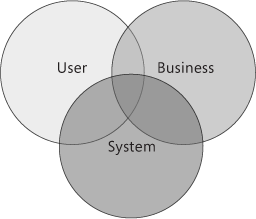

the process of defining a structured solution that meets all of the technical and operational requirements, while optimizing common quality attributes such as performance, security, and manageability the organization of a software system including the selection of the structural elements and their interfaces by which the system is composed; behavior as specified in collaboration among those elements; composition of these structural and behavioral elements into larger subsystems; and an architectural style that guides this organization. Software architecture also involves functionality, usability, resilience, performance, reuse, comprehensibility, economic and technology constraints, tradeoffs and aesthetic concerns common recurring themes: breakdown of a system into its parts; the decisions that are hard to change; there are multiple architectures in a system; what is architecturally significant can change over a system's lifetime; and, in the end, architecture boils down to whatever the important stuff is comprise software elements, the externally visible properties of those elements, and the relationships among them. Architecture is concerned with the public side of interfaces https://msdn.microsoft.com/en-us/library/ee658098.aspx
info
The risks exposed by poor architecture include software that is unstable, is unable to support existing or future business requirements, or is difficult to deploy or manage in a production environment. Systems should be designed with consideration for the user, the system (the IT infrastructure), and the business goals
is a general, reusable solution to a commonly occurring problem The architecture of a software system is almost never limited to a single architectural style, but is often a combination of architectural styles that make up the complete system
https://en.wikipedia.org/wiki/List_of_software_architecture_styles_and_patterns
https://msdn.microsoft.com/en-us/library/ee658124.aspx
https://en.wikipedia.org/wiki/Multitier_architecture#Three-tier_architecture
Traditionally used for desktop graphical user interfaces, this architecture has become extremely popular for designing web applications MVC web frameworks now hold large market shares relative to non-MVC web toolkits
variants such as HMVC, MVA, MVP, MVVM
Do one thing and do it well
https://en.wikipedia.org/wiki/Big_ball_of_mud
https://it.wikipedia.org/wiki/Code_smell
https://it.wikipedia.org/wiki/Don%27t_Repeat_Yourse
/